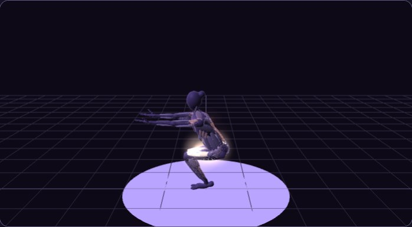
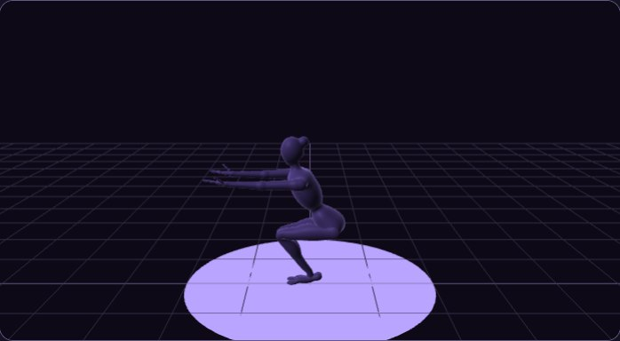
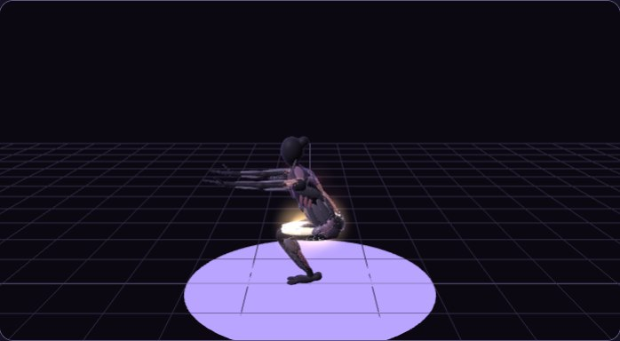
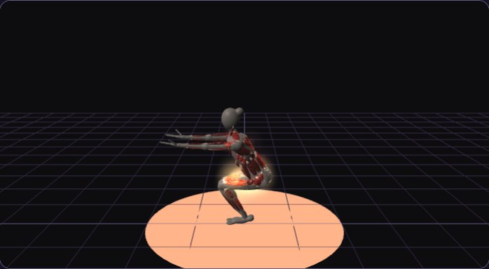
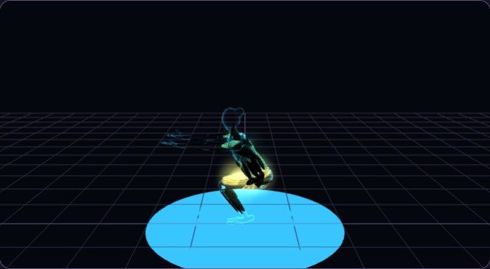
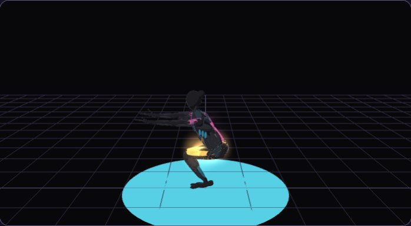
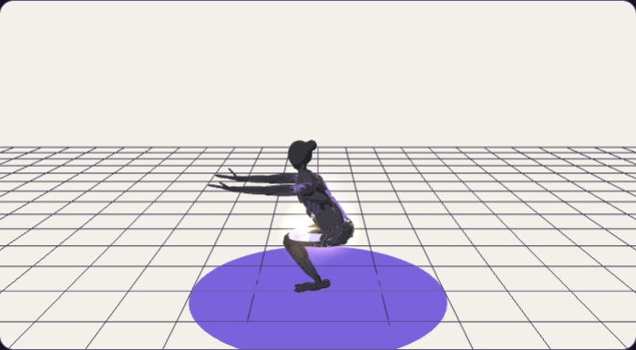

用关键帧编排人体
在动作脚本里写节奏、拍点和关节角度。深蹲展示从站立到下蹲再站起的过程，自由泳展示左右臂交替、躯干转动与打腿。可以暂停、拖动时间轴、旋转和缩放。
开源工具 · CLI 0.2.0
用代码展示 3D 人体动作与肌群变化
定义关键帧、节奏和关节角度，生成可以旋转、拖进度、查看肌群高亮的交互 HTML。分享给别人后，浏览器就能打开。
在动作脚本里写节奏、拍点和关节角度。深蹲展示从站立到下蹲再站起的过程，自由泳展示左右臂交替、躯干转动与打腿。可以暂停、拖动时间轴、旋转和缩放。
人体渲染覆盖 25 组肌群，脚本可指定强度和左右侧，其他值由动作规则估算。在深蹲页面拖到下蹲阶段，打开和关闭肌群，比较纯动作轮廓与高亮效果。
高亮是定性示意，未经肌电测量或临床验证。纯预览适合直接分享。源码对照可以一边查看动作文件，一边拖动播放器看姿势。默认纯预览，导出时加 --code 可默认打开源码面板。
CLI 把动作、人体网格、播放器和 Three.js 一起写入 HTML。接收者需要支持 WebGL 的浏览器，打开文件即可播放。
徒手深蹲，第 2.95 拍。去掉肌群层后，可以专注看髋、膝和躯干的姿势。


下方都是 CLI 实际渲染的同一个深蹲姿势。风格会改变材质、轮廓、背景和肌群配色。播放数据不变，肌群也可以独立隐藏。





解析动作脚本 → 插值关节轨道 → 求解 17 根骨骼 → 驱动约 3.7 万顶点的连续皮肤 → 用 WebGL 着色器绘制肌群。动作、肌群覆盖层和视觉风格共用同一帧数据，可以分别控制。
公开 CLI 现支持关节关键帧。完整的 Roya 工坊还展示脚步求解、逐帧数据导入导出、部位标签、轨迹和练习呈现。这里的两个独立播放器聚焦通用动作的制作与分享。
需要 Node.js 20+。当前通过 GitHub Release 分发 npm 安装包。
npm install -g https://github.com/EOMZON/motionmaid/releases/download/v0.2.0/motionmaid-0.2.0.tgz
motionmaid example squat > squat.motion
motionmaid render squat.motion -o squat.html --code